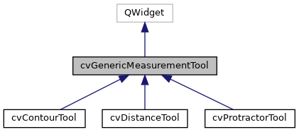
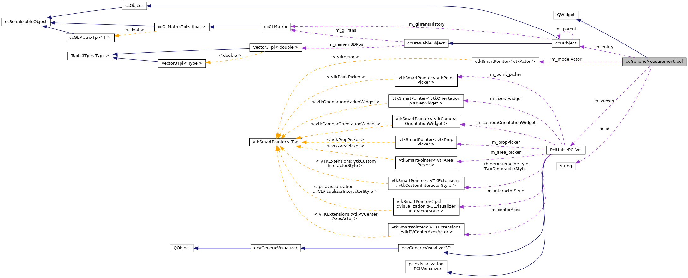

|
ACloudViewer
3.9.4
A Modern Library for 3D Data Processing
|
|
ACloudViewer
3.9.4
A Modern Library for 3D Data Processing
|
#include <cvGenericMeasurementTool.h>


Signals | |
| void | measurementValueChanged () |
| Signal sent when the measurement value changes. More... | |
| void | pointPickingRequested (int pointIndex) |
| void | pointPickingCancelled () |
| Signal sent when point picking is cancelled. More... | |
Public Member Functions | |
| cvGenericMeasurementTool (QWidget *parent=nullptr) | |
| virtual | ~cvGenericMeasurementTool () |
| virtual void | start () |
| virtual void | update () |
| virtual void | reset () |
| virtual ccHObject * | getOutput () |
| virtual bool | initModel () |
| virtual bool | setInput (ccHObject *obj) |
| virtual void | showWidget (bool state) |
| virtual void | clearAllActor () |
| virtual double | getMeasurementValue () const |
| Get measurement value (distance or angle) More... | |
| virtual void | getPoint1 (double pos[3]) const |
| Get point 1 coordinates. More... | |
| virtual void | getPoint2 (double pos[3]) const |
| Get point 2 coordinates. More... | |
| virtual void | getCenter (double pos[3]) const |
| Get center point coordinates (for angle/protractor) More... | |
| virtual void | setPoint1 (double pos[3]) |
| Set point 1 coordinates. More... | |
| virtual void | setPoint2 (double pos[3]) |
| Set point 2 coordinates. More... | |
| virtual void | setCenter (double pos[3]) |
| Set center point coordinates (for angle/protractor) More... | |
| virtual void | setColor (double r, double g, double b) |
| Set measurement color (RGB values in range [0.0, 1.0]) More... | |
| virtual bool | getColor (double &r, double &g, double &b) const |
| virtual void | lockInteraction () |
| Lock tool interaction (disable VTK widget interaction and UI controls) More... | |
| virtual void | unlockInteraction () |
| Unlock tool interaction (enable VTK widget interaction and UI controls) More... | |
| virtual void | setInstanceLabel (const QString &label) |
| Set instance label suffix (e.g., "#1", "#2") for display in 3D view. More... | |
| virtual void | setFontFamily (const QString &family) |
| virtual void | setFontSize (int size) |
| Set font size for measurement labels. More... | |
| virtual void | setBold (bool bold) |
| Set font bold state for measurement labels. More... | |
| virtual void | setItalic (bool italic) |
| Set font italic state for measurement labels. More... | |
| virtual void | setShadow (bool shadow) |
| Set font shadow state for measurement labels. More... | |
| virtual void | setFontOpacity (double opacity) |
| Set font opacity for measurement labels (0.0 to 1.0) More... | |
| virtual void | setFontColor (double r, double g, double b) |
| Set font color for measurement labels (RGB values 0.0-1.0) More... | |
| virtual void | setHorizontalJustification (const QString &justification) |
| virtual void | setVerticalJustification (const QString &justification) |
| QString | getFontFamily () const |
| Get font properties (for UI synchronization) More... | |
| int | getFontSize () const |
| void | getFontColor (double &r, double &g, double &b) const |
| bool | getFontBold () const |
| bool | getFontItalic () const |
| bool | getFontShadow () const |
| double | getFontOpacity () const |
| QString | getHorizontalJustification () const |
| QString | getVerticalJustification () const |
| void | setUpViewer (PclUtils::PCLVis *viewer) |
| void | setInteractor (vtkRenderWindowInteractor *interactor) |
| vtkRenderWindowInteractor * | getInteractor () |
| vtkRenderer * | getRenderer () |
| void | setupShortcuts (QWidget *vtkWidget) |
| void | disableShortcuts () |
| Disable all keyboard shortcuts (call before tool destruction) More... | |
| void | clearPickingCache () |
Protected Member Functions | |
| virtual void | applyFontProperties ()=0 |
| virtual void | modelReady () |
| virtual void | dataChanged () |
| void | safeOff (vtkAbstractWidget *widget) |
| virtual void | initTool () |
| virtual void | createUi () |
| virtual void | setupPointPickingShortcuts (QWidget *vtkWidget) |
| void | updatePickingHelpers () |
| Update point picking helpers with current interactor/renderer. More... | |
| void | addActor (const vtkSmartPointer< vtkProp > actor) |
| void | removeActor (const vtkSmartPointer< vtkProp > actor) |
Protected Attributes | |
| Ui::GenericMeasurementToolDlg * | m_ui = nullptr |
| std::string | m_id |
| ccHObject * | m_entity = nullptr |
| PclUtils::PCLVis * | m_viewer = nullptr |
| vtkRenderWindowInteractor * | m_interactor = nullptr |
| vtkRenderer * | m_renderer = nullptr |
| vtkSmartPointer< vtkActor > | m_modelActor |
| QList< cvPointPickingHelper * > | m_pickingHelpers |
| List of point picking helpers for keyboard shortcuts. More... | |
| QWidget * | m_vtkWidget = nullptr |
| VTK widget reference for creating shortcuts (saved from linkWith) More... | |
| QString | m_fontFamily = "Arial" |
| Font properties for measurement labels (shared by all tools) More... | |
| int | m_fontSize = 6 |
| double | m_fontColor [3] = {1.0, 1.0, 1.0} |
| bool | m_fontBold = false |
| bool | m_fontItalic = false |
| bool | m_fontShadow = true |
| double | m_fontOpacity = 1.0 |
| QString | m_horizontalJustification = "Left" |
| QString | m_verticalJustification = "Bottom" |
Definition at line 40 of file cvGenericMeasurementTool.h.
|
explicit |
Definition at line 41 of file cvGenericMeasurementTool.cpp.
References cloudViewer::core::Minimum().
|
virtual |
Definition at line 57 of file cvGenericMeasurementTool.cpp.
References clearAllActor(), m_pickingHelpers, and m_ui.
|
protected |
Definition at line 209 of file cvGenericMeasurementTool.cpp.
References m_renderer.
|
protectedpure virtual |
Apply font properties to VTK text properties Must be implemented by derived classes to apply to their specific VTK actors
Referenced by setBold(), setFontColor(), setFontFamily(), setFontOpacity(), setFontSize(), setHorizontalJustification(), setItalic(), setShadow(), and setVerticalJustification().
|
virtual |
Definition at line 222 of file cvGenericMeasurementTool.cpp.
References m_modelActor, and m_renderer.
Referenced by PclMeasurementTools::clear(), and ~cvGenericMeasurementTool().
| void cvGenericMeasurementTool::clearPickingCache | ( | ) |
Clear selection cache in all picking helpers (call when scene/camera changes)
Definition at line 259 of file cvGenericMeasurementTool.cpp.
References m_pickingHelpers.
Referenced by PclMeasurementTools::clearPickingCache(), start(), and update().
|
inlineprotectedvirtual |
Reimplemented in cvProtractorTool, cvDistanceTool, and cvContourTool.
Definition at line 199 of file cvGenericMeasurementTool.h.
Referenced by start().
|
inlineprotectedvirtual |
Definition at line 194 of file cvGenericMeasurementTool.h.
Referenced by start().
| void cvGenericMeasurementTool::disableShortcuts | ( | ) |
Disable all keyboard shortcuts (call before tool destruction)
Definition at line 245 of file cvGenericMeasurementTool.cpp.
References m_pickingHelpers, and CVLog::PrintDebug().
Referenced by PclMeasurementTools::disableShortcuts(), cvContourTool::lockInteraction(), cvDistanceTool::lockInteraction(), and cvProtractorTool::lockInteraction().
|
inlinevirtual |
Get center point coordinates (for angle/protractor)
Reimplemented in cvProtractorTool.
Definition at line 86 of file cvGenericMeasurementTool.h.
Referenced by PclMeasurementTools::getCenter().
|
inlinevirtual |
Get measurement color (RGB values in range [0.0, 1.0]) Returns false if not implemented, true if color is retrieved
Reimplemented in cvProtractorTool, cvDistanceTool, and cvContourTool.
Definition at line 106 of file cvGenericMeasurementTool.h.
Referenced by PclMeasurementTools::getColor().
|
inline |
Definition at line 160 of file cvGenericMeasurementTool.h.
References m_fontBold.
Referenced by PclMeasurementTools::getFontBold().
|
inline |
Definition at line 155 of file cvGenericMeasurementTool.h.
References m_fontColor.
Referenced by PclMeasurementTools::getFontColor().
|
inline |
Get font properties (for UI synchronization)
Definition at line 153 of file cvGenericMeasurementTool.h.
References m_fontFamily.
Referenced by PclMeasurementTools::getFontFamily().
|
inline |
Definition at line 161 of file cvGenericMeasurementTool.h.
References m_fontItalic.
Referenced by PclMeasurementTools::getFontItalic().
|
inline |
Definition at line 163 of file cvGenericMeasurementTool.h.
References m_fontOpacity.
Referenced by PclMeasurementTools::getFontOpacity().
|
inline |
Definition at line 162 of file cvGenericMeasurementTool.h.
References m_fontShadow.
Referenced by PclMeasurementTools::getFontShadow().
|
inline |
Definition at line 154 of file cvGenericMeasurementTool.h.
References m_fontSize.
Referenced by PclMeasurementTools::getFontSize().
|
inline |
Definition at line 164 of file cvGenericMeasurementTool.h.
References m_horizontalJustification.
Referenced by PclMeasurementTools::getHorizontalJustification().
|
inline |
Definition at line 178 of file cvGenericMeasurementTool.h.
References m_interactor.
|
inlinevirtual |
Get measurement value (distance or angle)
Reimplemented in cvProtractorTool, and cvDistanceTool.
Definition at line 69 of file cvGenericMeasurementTool.h.
Referenced by PclMeasurementTools::getMeasurementValue().
|
virtual |
Reimplemented in cvProtractorTool, cvDistanceTool, and cvContourTool.
Definition at line 189 of file cvGenericMeasurementTool.cpp.
Referenced by PclMeasurementTools::getOutput().
|
inlinevirtual |
Get point 1 coordinates.
Reimplemented in cvProtractorTool, and cvDistanceTool.
Definition at line 72 of file cvGenericMeasurementTool.h.
Referenced by PclMeasurementTools::getPoint1().
|
inlinevirtual |
Get point 2 coordinates.
Reimplemented in cvProtractorTool, and cvDistanceTool.
Definition at line 79 of file cvGenericMeasurementTool.h.
Referenced by PclMeasurementTools::getPoint2().
|
inline |
Definition at line 179 of file cvGenericMeasurementTool.h.
References m_renderer.
|
inline |
Definition at line 167 of file cvGenericMeasurementTool.h.
References m_verticalJustification.
Referenced by PclMeasurementTools::getVerticalJustification().
|
virtual |
Definition at line 156 of file cvGenericMeasurementTool.cpp.
References CVLog::Error(), PclUtils::PCLVis::getCurrentRenderer(), m_entity, m_renderer, and m_viewer.
Referenced by setInput().
|
inlineprotectedvirtual |
Reimplemented in cvProtractorTool, cvDistanceTool, and cvContourTool.
Definition at line 198 of file cvGenericMeasurementTool.h.
Referenced by start().
|
inlinevirtual |
Lock tool interaction (disable VTK widget interaction and UI controls)
Reimplemented in cvProtractorTool, cvDistanceTool, and cvContourTool.
Definition at line 114 of file cvGenericMeasurementTool.h.
Referenced by PclMeasurementTools::lockInteraction().
|
signal |
Signal sent when the measurement value changes.
Referenced by PclMeasurementTools::initialize(), cvContourTool::reset(), cvDistanceTool::reset(), and cvProtractorTool::reset().
|
protectedvirtual |
Definition at line 171 of file cvGenericMeasurementTool.cpp.
Referenced by start().
|
signal |
Signal sent when point picking is cancelled.
Referenced by PclMeasurementTools::initialize().
|
signal |
Signal sent when point picking is requested
| pointIndex | 1=point1, 2=point2, 3=center |
Referenced by PclMeasurementTools::initialize().
|
protected |
Definition at line 215 of file cvGenericMeasurementTool.cpp.
References m_renderer.
|
virtual |
Reimplemented in cvProtractorTool, cvDistanceTool, and cvContourTool.
Definition at line 185 of file cvGenericMeasurementTool.cpp.
Referenced by PclMeasurementTools::reset().
|
protected |
Definition at line 230 of file cvGenericMeasurementTool.cpp.
|
virtual |
Set font bold state for measurement labels.
Definition at line 279 of file cvGenericMeasurementTool.cpp.
References applyFontProperties(), and m_fontBold.
Referenced by PclMeasurementTools::setBold().
|
inlinevirtual |
Set center point coordinates (for angle/protractor)
Reimplemented in cvProtractorTool.
Definition at line 99 of file cvGenericMeasurementTool.h.
Referenced by PclMeasurementTools::setCenter().
|
inlinevirtual |
Set measurement color (RGB values in range [0.0, 1.0])
Reimplemented in cvProtractorTool, cvDistanceTool, and cvContourTool.
Definition at line 102 of file cvGenericMeasurementTool.h.
Referenced by PclMeasurementTools::setColor().
|
virtual |
Set font color for measurement labels (RGB values 0.0-1.0)
Definition at line 299 of file cvGenericMeasurementTool.cpp.
References applyFontProperties(), and m_fontColor.
Referenced by PclMeasurementTools::setFontColor().
|
virtual |
Set font family for measurement labels (e.g., "Arial", "Times New Roman")
Definition at line 269 of file cvGenericMeasurementTool.cpp.
References applyFontProperties(), and m_fontFamily.
Referenced by PclMeasurementTools::setFontFamily().
|
virtual |
Set font opacity for measurement labels (0.0 to 1.0)
Definition at line 294 of file cvGenericMeasurementTool.cpp.
References applyFontProperties(), and m_fontOpacity.
Referenced by PclMeasurementTools::setFontOpacity().
|
virtual |
Set font size for measurement labels.
Definition at line 274 of file cvGenericMeasurementTool.cpp.
References applyFontProperties(), m_fontSize, and size.
Referenced by PclMeasurementTools::setFontSize().
|
virtual |
Set horizontal justification for measurement labels ("Left", "Center", "Right")
Definition at line 306 of file cvGenericMeasurementTool.cpp.
References applyFontProperties(), and m_horizontalJustification.
Referenced by PclMeasurementTools::setHorizontalJustification().
|
virtual |
Definition at line 142 of file cvGenericMeasurementTool.cpp.
References ccHObject::getViewId(), initModel(), m_entity, and m_id.
Referenced by PclMeasurementTools::setInputData().
|
inlinevirtual |
Set instance label suffix (e.g., "#1", "#2") for display in 3D view.
Reimplemented in cvProtractorTool, cvDistanceTool, and cvContourTool.
Definition at line 120 of file cvGenericMeasurementTool.h.
Referenced by PclMeasurementTools::setInstanceLabel().
| void cvGenericMeasurementTool::setInteractor | ( | vtkRenderWindowInteractor * | interactor | ) |
Definition at line 204 of file cvGenericMeasurementTool.cpp.
References m_interactor.
Referenced by PclMeasurementTools::initialize(), PclMeasurementTools::setVisualizer(), and PclMeasurementTools::start().
|
virtual |
Set font italic state for measurement labels.
Definition at line 284 of file cvGenericMeasurementTool.cpp.
References applyFontProperties(), and m_fontItalic.
Referenced by PclMeasurementTools::setItalic().
|
inlinevirtual |
Set point 1 coordinates.
Reimplemented in cvProtractorTool, and cvDistanceTool.
Definition at line 93 of file cvGenericMeasurementTool.h.
Referenced by PclMeasurementTools::setPoint1().
|
inlinevirtual |
Set point 2 coordinates.
Reimplemented in cvProtractorTool, and cvDistanceTool.
Definition at line 96 of file cvGenericMeasurementTool.h.
Referenced by PclMeasurementTools::setPoint2().
|
virtual |
Set font shadow state for measurement labels.
Definition at line 289 of file cvGenericMeasurementTool.cpp.
References applyFontProperties(), and m_fontShadow.
Referenced by PclMeasurementTools::setShadow().
|
inlineprotectedvirtual |
Setup keyboard shortcuts for point picking Override in derived classes to add specific shortcuts
| vtkWidget | The VTK render window widget to bind shortcuts to |
Reimplemented in cvProtractorTool, and cvDistanceTool.
Definition at line 204 of file cvGenericMeasurementTool.h.
Referenced by setupShortcuts().
| void cvGenericMeasurementTool::setupShortcuts | ( | QWidget * | vtkWidget | ) |
Setup keyboard shortcuts for point picking (call after linking with VTK widget)
Definition at line 95 of file cvGenericMeasurementTool.cpp.
References m_pickingHelpers, m_vtkWidget, CVLog::PrintDebug(), setupPointPickingShortcuts(), updatePickingHelpers(), and CVLog::Warning().
Referenced by PclMeasurementTools::setupShortcuts(), cvContourTool::unlockInteraction(), cvDistanceTool::unlockInteraction(), and cvProtractorTool::unlockInteraction().
| void cvGenericMeasurementTool::setUpViewer | ( | PclUtils::PCLVis * | viewer | ) |
Definition at line 194 of file cvGenericMeasurementTool.cpp.
References PclUtils::PCLVis::getCurrentRenderer(), m_interactor, m_renderer, and m_viewer.
Referenced by PclMeasurementTools::initialize(), and PclMeasurementTools::setVisualizer().
|
virtual |
Set vertical justification for measurement labels ("Top", "Center", "Bottom")
Definition at line 312 of file cvGenericMeasurementTool.cpp.
References applyFontProperties(), and m_verticalJustification.
Referenced by PclMeasurementTools::setVerticalJustification().
|
inlinevirtual |
Reimplemented in cvProtractorTool, cvDistanceTool, and cvContourTool.
Definition at line 65 of file cvGenericMeasurementTool.h.
|
virtual |
Reimplemented in cvProtractorTool, cvDistanceTool, and cvContourTool.
Definition at line 75 of file cvGenericMeasurementTool.cpp.
References clearPickingCache(), createUi(), dataChanged(), initTool(), modelReady(), and update().
Referenced by cvContourTool::start(), cvDistanceTool::start(), cvProtractorTool::start(), and PclMeasurementTools::start().
|
inlinevirtual |
Unlock tool interaction (enable VTK widget interaction and UI controls)
Reimplemented in cvProtractorTool, cvDistanceTool, and cvContourTool.
Definition at line 117 of file cvGenericMeasurementTool.h.
Referenced by PclMeasurementTools::unlockInteraction().
|
virtual |
Definition at line 175 of file cvGenericMeasurementTool.cpp.
References clearPickingCache(), m_renderer, and m_viewer.
Referenced by cvContourTool::lockInteraction(), cvContourTool::reset(), cvDistanceTool::reset(), cvProtractorTool::reset(), cvProtractorTool::setCenter(), cvContourTool::setColor(), cvDistanceTool::setColor(), cvProtractorTool::setColor(), cvContourTool::setInstanceLabel(), cvDistanceTool::setInstanceLabel(), cvDistanceTool::setPoint1(), cvProtractorTool::setPoint1(), cvDistanceTool::setPoint2(), cvProtractorTool::setPoint2(), cvContourTool::showWidget(), cvDistanceTool::showWidget(), cvProtractorTool::showWidget(), start(), and cvContourTool::unlockInteraction().
|
protected |
Update point picking helpers with current interactor/renderer.
Definition at line 236 of file cvGenericMeasurementTool.cpp.
References m_interactor, m_pickingHelpers, and m_renderer.
Referenced by setupShortcuts(), and cvProtractorTool::unlockInteraction().
|
protected |
Definition at line 218 of file cvGenericMeasurementTool.h.
Referenced by cvDistanceTool::getOutput(), cvProtractorTool::getOutput(), initModel(), cvDistanceTool::initTool(), cvProtractorTool::initTool(), cvDistanceTool::reset(), cvProtractorTool::reset(), and setInput().
|
protected |
Definition at line 235 of file cvGenericMeasurementTool.h.
Referenced by getFontBold(), and setBold().
|
protected |
Definition at line 234 of file cvGenericMeasurementTool.h.
Referenced by getFontColor(), setFontColor(), cvContourTool::unlockInteraction(), cvDistanceTool::unlockInteraction(), and cvProtractorTool::unlockInteraction().
|
protected |
Font properties for measurement labels (shared by all tools)
Definition at line 232 of file cvGenericMeasurementTool.h.
Referenced by getFontFamily(), and setFontFamily().
|
protected |
Definition at line 236 of file cvGenericMeasurementTool.h.
Referenced by getFontItalic(), and setItalic().
|
protected |
Definition at line 238 of file cvGenericMeasurementTool.h.
Referenced by getFontOpacity(), setFontOpacity(), cvContourTool::unlockInteraction(), cvDistanceTool::unlockInteraction(), and cvProtractorTool::unlockInteraction().
|
protected |
Definition at line 237 of file cvGenericMeasurementTool.h.
Referenced by getFontShadow(), and setShadow().
|
protected |
Definition at line 233 of file cvGenericMeasurementTool.h.
Referenced by cvContourTool::cvContourTool(), cvProtractorTool::cvProtractorTool(), getFontSize(), and setFontSize().
|
protected |
Definition at line 239 of file cvGenericMeasurementTool.h.
Referenced by getHorizontalJustification(), and setHorizontalJustification().
|
protected |
Definition at line 217 of file cvGenericMeasurementTool.h.
Referenced by setInput().
|
protected |
Definition at line 220 of file cvGenericMeasurementTool.h.
Referenced by getInteractor(), cvProtractorTool::getOutput(), cvDistanceTool::initTool(), cvProtractorTool::initTool(), cvContourTool::lockInteraction(), cvDistanceTool::lockInteraction(), cvProtractorTool::lockInteraction(), setInteractor(), cvDistanceTool::setupPointPickingShortcuts(), cvProtractorTool::setupPointPickingShortcuts(), setUpViewer(), cvContourTool::unlockInteraction(), cvDistanceTool::unlockInteraction(), cvProtractorTool::unlockInteraction(), updatePickingHelpers(), cvContourTool::~cvContourTool(), cvDistanceTool::~cvDistanceTool(), and cvProtractorTool::~cvProtractorTool().
|
protected |
Definition at line 223 of file cvGenericMeasurementTool.h.
Referenced by clearAllActor().
|
protected |
List of point picking helpers for keyboard shortcuts.
Definition at line 226 of file cvGenericMeasurementTool.h.
Referenced by clearPickingCache(), disableShortcuts(), cvDistanceTool::lockInteraction(), cvDistanceTool::setupPointPickingShortcuts(), cvProtractorTool::setupPointPickingShortcuts(), setupShortcuts(), cvContourTool::unlockInteraction(), cvDistanceTool::unlockInteraction(), cvProtractorTool::unlockInteraction(), updatePickingHelpers(), and ~cvGenericMeasurementTool().
|
protected |
Definition at line 221 of file cvGenericMeasurementTool.h.
Referenced by addActor(), clearAllActor(), cvProtractorTool::getOutput(), getRenderer(), initModel(), cvDistanceTool::initTool(), cvProtractorTool::initTool(), removeActor(), cvDistanceTool::setupPointPickingShortcuts(), cvProtractorTool::setupPointPickingShortcuts(), setUpViewer(), update(), and updatePickingHelpers().
|
protected |
Definition at line 215 of file cvGenericMeasurementTool.h.
Referenced by cvContourTool::createUi(), cvDistanceTool::createUi(), cvProtractorTool::createUi(), and ~cvGenericMeasurementTool().
|
protected |
Definition at line 240 of file cvGenericMeasurementTool.h.
Referenced by getVerticalJustification(), and setVerticalJustification().
|
protected |
Definition at line 219 of file cvGenericMeasurementTool.h.
Referenced by initModel(), setUpViewer(), and update().
|
protected |
VTK widget reference for creating shortcuts (saved from linkWith)
Definition at line 229 of file cvGenericMeasurementTool.h.
Referenced by setupShortcuts(), cvContourTool::unlockInteraction(), cvDistanceTool::unlockInteraction(), and cvProtractorTool::unlockInteraction().